La investigación forense: la huella digital de un cibercriminal.
Parte I. Análisis forense.
Para esta práctica deberá analizar una muestra que es utilizado para entrenamiento forense digital dirigido hacia los agentes de la Agencia Nacional de Seguridad NSA Cybersecurity (https://www.nsa.gov/Cybersecurity/) y las diferentes fuerzas del orden en el mundo.
El escenario se integra por 31 preguntas de análisis, de los cuales deberá únicamente responder los que a continuación se proporcionan.
Escenario-
El 20/09/04, una computadora portátil Dell CPi, número de serie VLQLW, fue encontrada abandonada junto con una tarjeta PCMCIA inalámbrica y una antena externa 802.11b casera.
Se sospecha que esta computadora fue utilizada con fines de piratería, aunque no se puede vincular a un sospechoso de piratería, G=r=e=g S=c=h=a=r=d=t. (Los signos iguales son sólo para evitar que los rastreadores web indexen este nombre; no hay signos iguales en los archivos de imagen).
Schardt también recibe el apodo en línea de “Mr. Evil” y algunos de sus asociados han dicho que estacionaría su vehículo dentro del alcance de puntos de acceso inalámbricos (como Starbucks y otros hotspots de T-Mobile) donde luego interceptaría el tráfico de Internet, intentando obtener números de tarjetas de crédito, nombres de usuario y contraseñas.
Esta imagen de prueba requiere una variedad de habilidades para responder las preguntas dadas. Encuentre cualquier software de piratería, evidencia de su uso y cualquier dato que pueda haberse generado. Intente vincular la computadora al sospechoso, G=r=e=g S=c=h=a=r=d=t.
Instrucciones: Detalle el proceso a través de capturas de pantallas.
- Obtenga la imagen forense de análisis a través del enlace: https://cfreds-archive.nist.gov/Hacking_Case.html, la evidencia esta compuesta por 08 partes, descargue los ficheros en una misma carpeta dentro de una “nueva carpeta” en el escritorio.
A continuación, ejecute Autopsy, seleccione “New Case”, configure el proyecto con los siguientes datos.
Case Name: INV01UPSLP.
Directorio Base: destino de directorio creado.
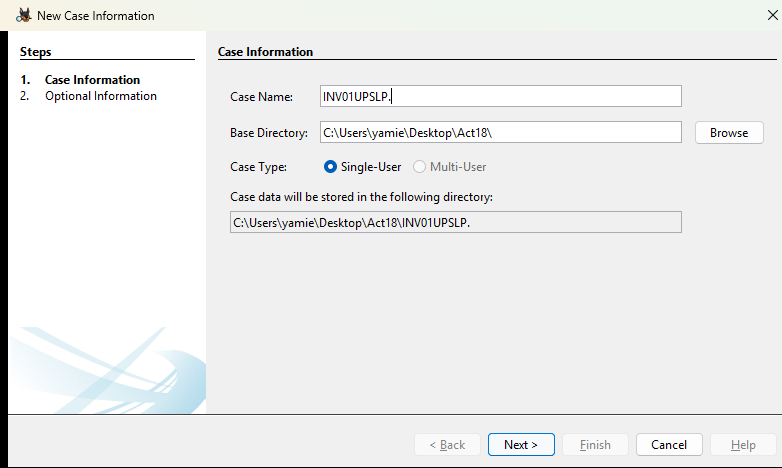
Después en la siguiente pestaña.
Number: 01
En la sección “Examiner”, introduzca sus credenciales.
Notes: Fraude (carding) Greg Schardt.
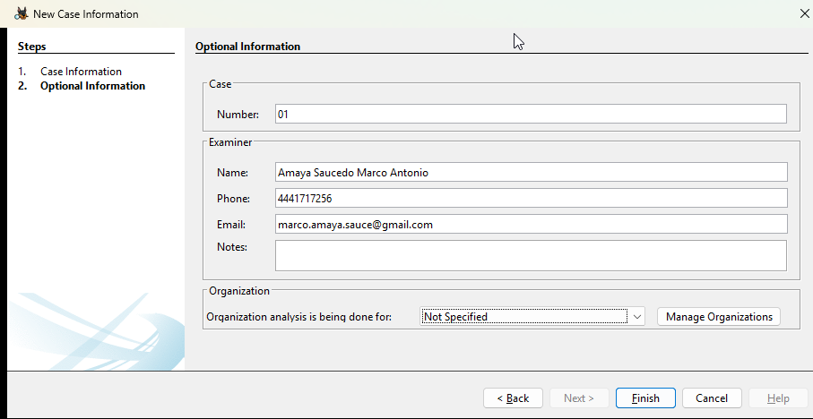
Cree una nueva organización con la siguiente información y seleccione la misma.
Organization Name: Universidad Politécnica de San Luis Potosí.
Name: CNO IV – Seguridad Informática.
Email: matricula@upslp.edu.mx
Phone: xxxxxx
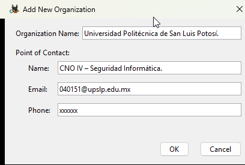
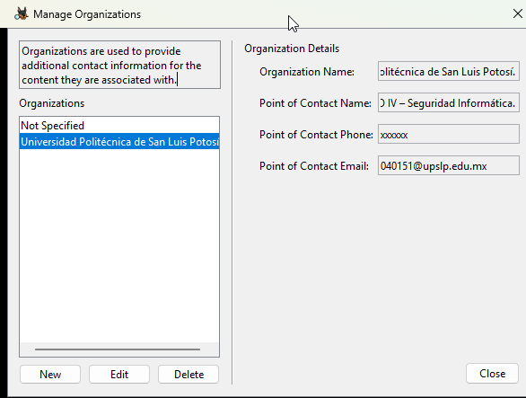
Una vez finalizado el proceso de configuración, el programa iniciará a procesar la estructura base del proyecto, posteriormente observará una pestaña en la que deberá seleccionar “Generate new host name base don data source name”.
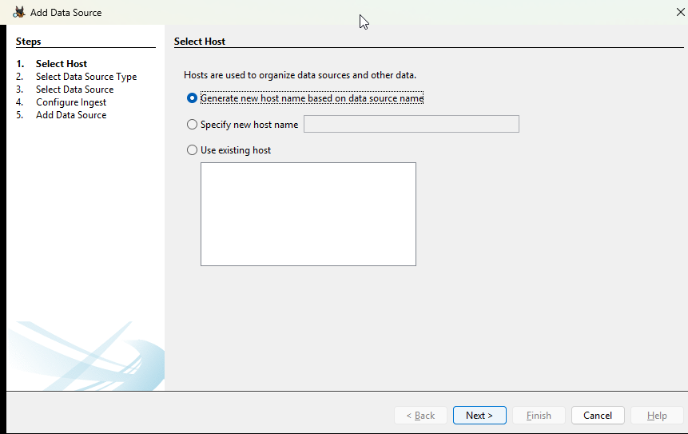
- En la venta siguiente seleccione “Disk Image or VM File Files”.
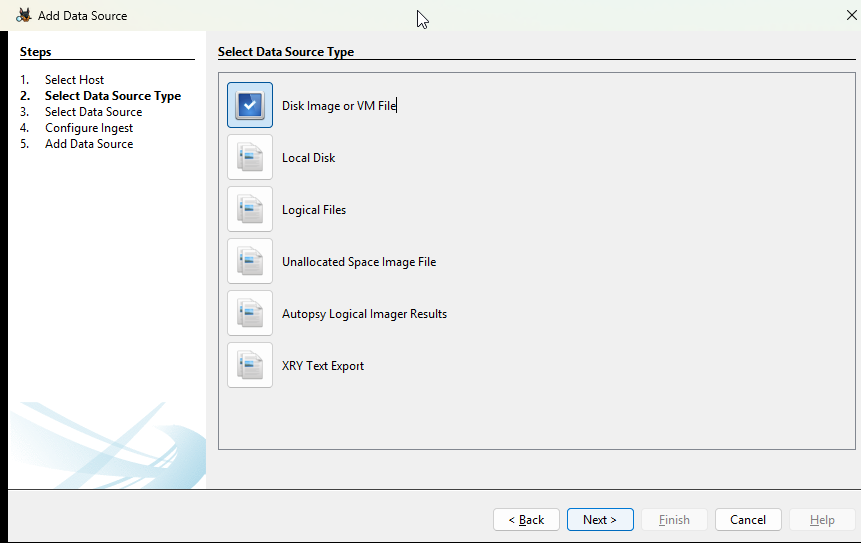
¿A qué se refiere el tipo de origen “Logical Files”?
Archivos sueltos en cualquier formato que se desen analizar.
¿A qué se refiere el tipo de origen “Local Disk”?
A un disco duro conectado directamente en nuestro equipo
- En la ventana siguiente seleccione la ubicación dónde se encuentran los ficheros que serán analizados:
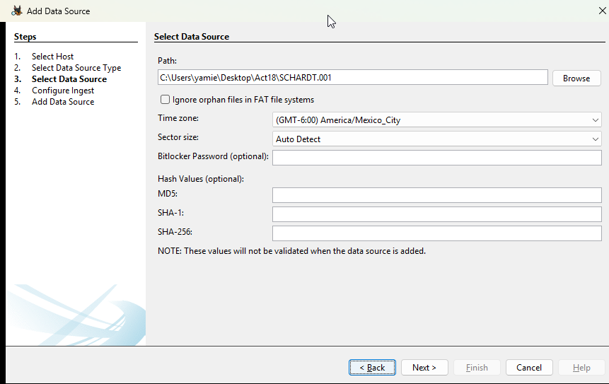
Después marqué todos los módulos de búsqueda que se encuentran disponibles y finalicé el proceso de importación de evidencia.
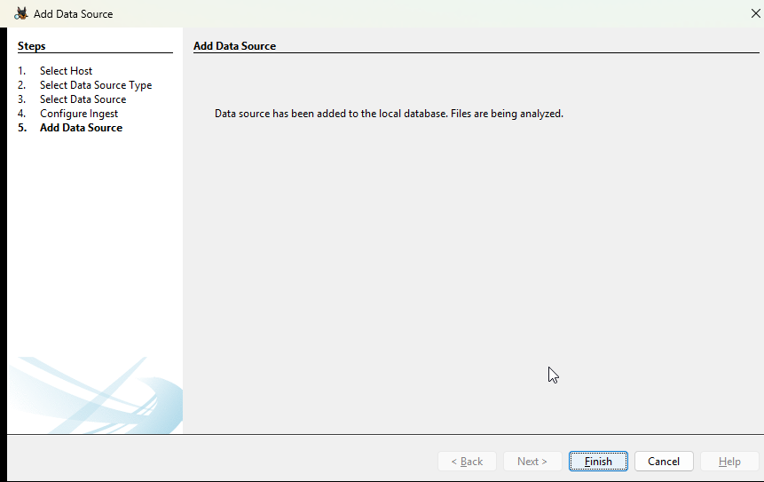
¿Cuál es el hash de la imagen? ¿Coinciden el hash de adquisición y verificación?
aee4fcd9301c03b3b054623ca261959a
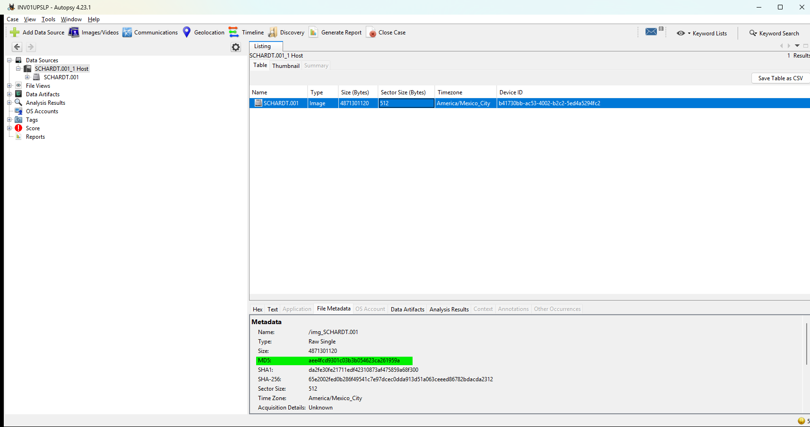
- ¿Qué sistema operativo se utilizó en la computadora?
Microsoft Windows XP
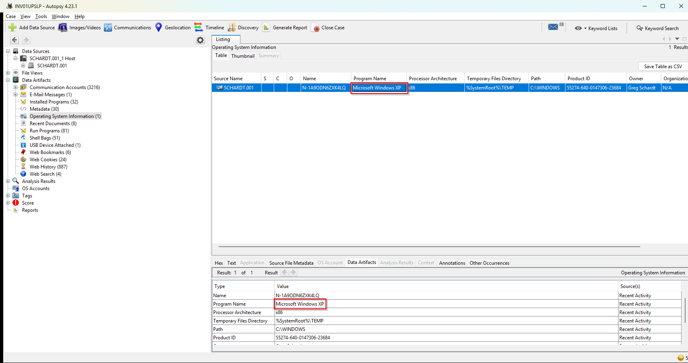
- ¿Cuándo fue la fecha de instalación?
Esta información se encuentra en el registro de Windows en la ruta HKEY_LOCAL_MACHINE\SOFTWARE\Microsoft\Windows NT\CurrentVersion\InstallDate
La ruta donde se almacena est llave es C:\Windows\system32\config\Software\Microsoft\Windows NT\CurrentVersion\InstallDate en est ruta encontramos la fecha de instalacion 0x41252e3b (1092955707) esta fecha está en formato Unix por lo cual hay que convertirla dando como resultado jueves, 19 de agosto de 2004, 10:48:27 p.m.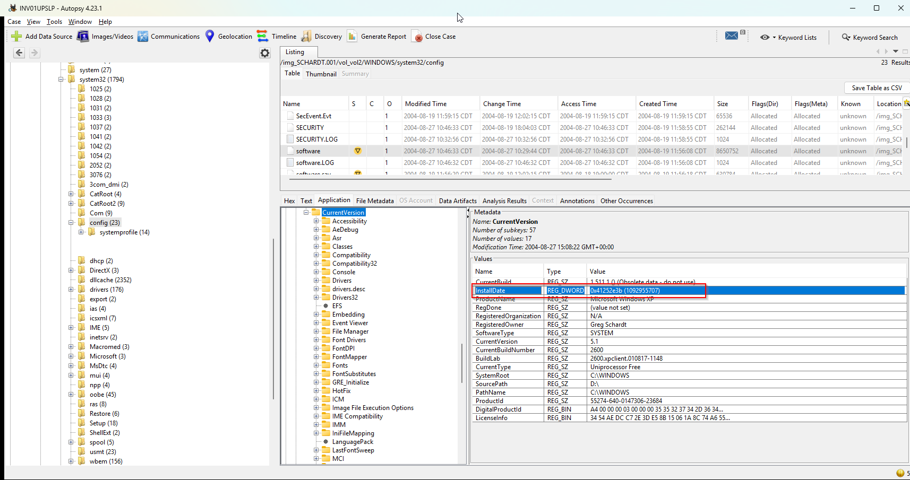
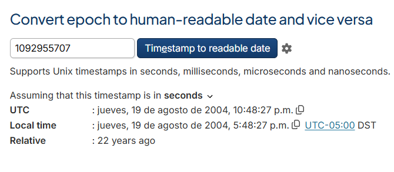
- ¿Cuál es la configuración de zona horaria?
HKEY_LOCAL_MACHINE\system\CurrentControlSet\Control\TimeZoneInformation C:\windows\system32\config\system\CurrentControlSet\Control\TimeZoneInformation
Central standard time.
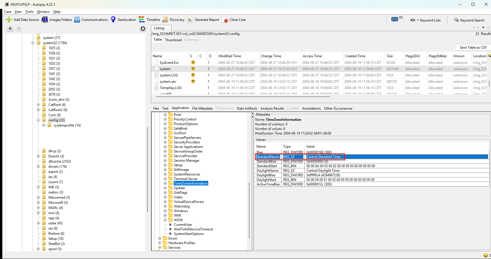
- ¿Quién es el propietario registrado?
C:\Windows\system32\config\Software\Microsoft\Windows NT\CurrentVersion\RegisteredOwner
Greg Schardt
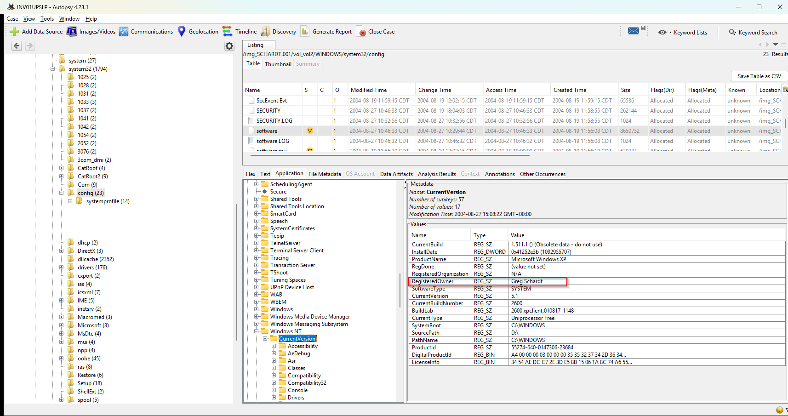
- ¿Cuál es el nombre de la cuenta de la computadora?
C:\Windows\system32\config\Software\Microsoft\Windows NT\CurrentVersion\Winlogon
Mr. Evil
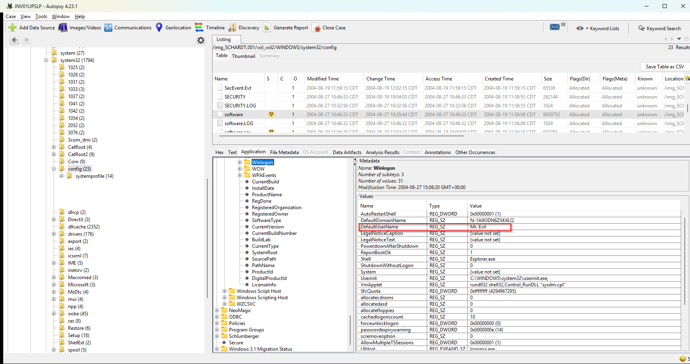
- ¿Cuál es el nombre de dominio principal?
C:\Windows\system32\config\Software\Microsoft\Windows NT\CurrentVersion\Winlogon
N-1A9ODN6ZXK4LQ
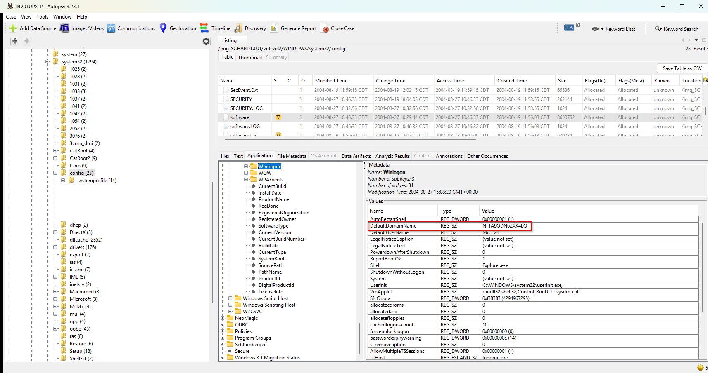
- ¿Cuándo fue la última fecha/hora registrada en que se apagó la computadora?
C:\WINDOWS\system32\config\software\Microsoft\WindowNT\CurrentVersion\Prefetch er\ExitTime
27/08/2004 – 10:46:27
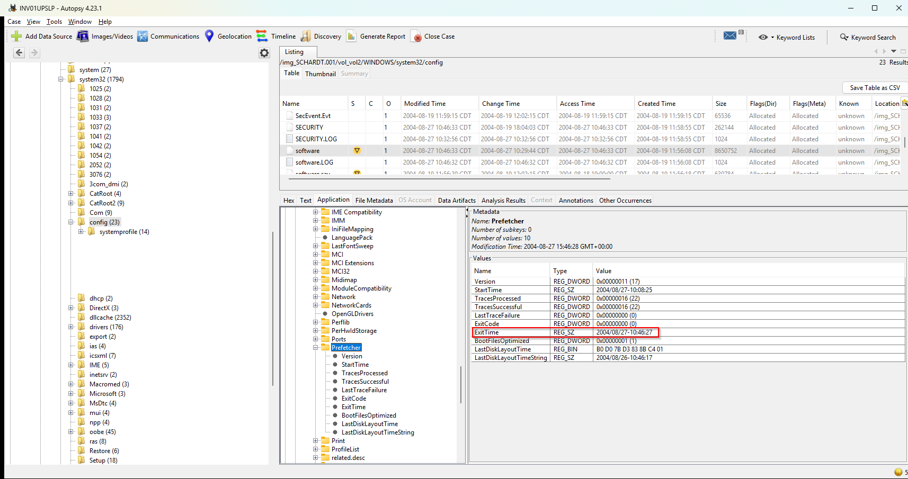
- ¿Cuántas cuentas están registradas (número total)?
C:\windows\system32\config\SAM\Domains\Account\Users\Names
5
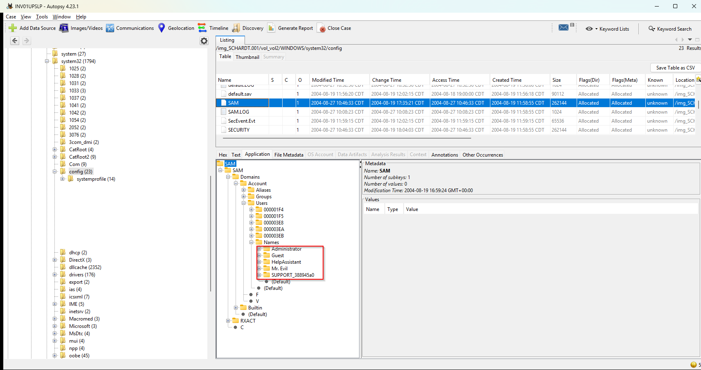
Referencias: https://medium.com/@sshekhar01/cfreds-project-hacking-case-challenge-writeup- 6a52883eac0b